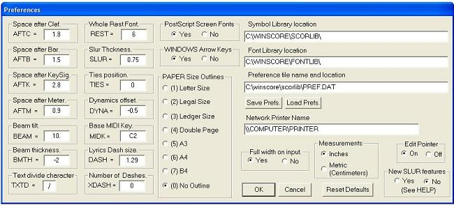
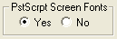

The Preference file (type PREF)
When you start up WinScore it must read in a preference file and some special data files. The preference file, PREF.DAT, is found in your \SCORLIB directory. While you are running WinScore you may view and edit the contents of PREF.DAT by typing the word PREF to the command line prompt. When this is typed the following dialog box will appear.

Explanations of all the keywords are given below.
If any changes are made in the assigned values you may use the SAVE command to create a new preference file with the name of your choice.
The LOAD command may be used to read in a different preference file at any time. The Symbol Library and Font Library directories are usually found in C:\Program
Files\WinScore:. However, it may be useful to have special libraries for certain projects or there may be some reasons
to use different names for these directories. To change these names the complete path name
must be typed.
LOAD allows you to read in any preference file that you may have created for some special purpose. Any name may be used for such a file (see below).
SAVE allows you to save whatever changes you may have made to the preference list during the current work session. You may use any name for this saved file, however it is recommended that you use the name PREF. followed by some unique, distinguishing 3letter extension. In this way preference files may be easily located in disk directories. It is best that the name PREF.DAT be reserved for the preference file you will most often be using.
RESET DEFAULTS Clicking on this will restore the original state of the preferences. When any changes are made to the preferences, they will apply only to the current work session unless the SAVE button is clicked.
AFTC,
AFTB, AFTK, and
AFTM are used to alter the minimum space set by the Justify command after a clef (AFTC), a bar line (AFTB), a meter number (AFTM), or a key signature (AFTK) to the next note or rest. The
minimum space created by these commands will be an absolute value, regardless of the staff size. (The default minimum spaces vary with staff size. At size 1, the space after a clef = 1.8, after a bar = 2.5, after a key sig. = 2.8, after a meter = c.3.7.)
(The spacing of the LIneup command is independent of these commands.)
REST sets the type font for numbered whole rests. The default value is 6 (for the Music Number font, as used with meter numbers). Any font number that is valid for CODE 10 numbers may be used here. For example, to use Helvetica Bold type: REST 1005 See the CODE 10 help for details.
The BEAM tilt factor sets limits on the amount a beam will tilt at the input stage. The default factor is 10. This causes the difference in the heights of the ends of the beam (P4, P5) to be about 2 scale steps when the end points are about 10 horizontal space units apart. For steeper beams use a higher number (perhaps 12 or 14); for generally shallower beams use 7 or 8. (All the tilts may be adjusted in Edit Mode at any time after the initial input.)
BMTH controls the basic beam thickness with Laser printer output. The default here is -1. That is, all beams will have one pixel removed from their normal width. This default is set with 300 dpi printers in mind. When printing on 600 dpi or 1200 dpi machines you may want to set BMTH to -2 or -3 to get somewhat lighter beams. Also it is
sometimes desireable to decrease beam thickness when printing orchestral scores where the staff size must be rather small. This variable is independent of a beam's P17, which is a factor that applies only locally to a single beam. (Use this to adjust the thickness of grace note beams, etc.)
TXTD sets the character to be used to divide text (words and syllables) when inputting lyrics under notes. See Inputting Lyrics.
DASH sets the width of dashes that are used to separate syllables in lyrics under notes. The default size is 1.29. The dashes may be changed in Edit Mode, but if the CD (center dash) is used it will cause the dashes to revert to the size given in the preference DASH statement.
XDASh can limit the number of dashes that will appear between syllables. The default of zero puts no limit on the number. In this case the number of dashes is determined by the distance between the syllables. If XDASh is set to 1, then only 1 dash will appear no matter how far apart the syllables may be. Other numbers may be used, but in any case, very close syllables will never have more than 1 dash. (The CD command will always follow the current restriction set by XDASh.)
DYNAmics (p, pp, f, fff, etc.) may be automatically displaced to left of notes at Input time by giving a value to this variable. The default is -.5. DYNA -1 will displace marks 1 step to the left of a designated note.
INCHES or METRIC: When the word INCHes or METRic appears in the preference file the mode of measurements is established. (The measurement system may be changed at any time by typing INCHes or METRic time while in SCORE Command Mode.) (Type
MEAS to see which measurement system is current.)
MIDK sets the position of the special keys used on the MIDI keyboard for steptime note input. The default for this is C2. If you have an extended keyboard range you should normally set this to C1, thus using the lowest octave of the keyboard for the special keys. (See MIDI section for details on input.)
SLUR is used to set the basic thickness of slurs. The default value is 1. .8 will produce somewhat thinner slurs. (When in Edit Mode, P13 may be used to adjust the thickness of individual slurs.)
TIES can be used to set the position given ties at Input time. The default setting is zero, which means that a tie will appear between the specified notes unless they are very close together in which case the tie will appear above or below the notes. If TIES is set to 1, then the tie will always go above or below the notes involved. If TIES is set to -1, then the tie will always go between the notes involved.
Network Printer Name The name given here will be used in the Printer options menu.
For more information on network names see Microsoft Documentation or http://geekswithblogs.net/dtotzke/articles/26204.aspx
PostScript Screen Fonts: At the top middle of the dialog you will see:

If you have not installed the Adobe Basics Type library, text items may appear with random fonts. Assuming you have a PostScript printer, the text will appear with the proper fonts when printed. In order to make the text more readable on the screen, you should check the NO button in this box. This will cause all text to appear with the simple COURIER font. When printing, the correct fonts will appear. On the screen, the spacing of the letters will be that of the intended font. This may look strange in some cases, but this is necessary so that the space requirements of text entries may be correctly judged.
Also, if you don't want to alter the Preference listing, you may type "ADOBE 1". This will cause all text to appear with the simple COURIER font. Type "ADOBE 0" to return to the original state.
If only certain text items need to be converted, leave the YES button checked. Individual text items may be converted by putting the font number + 2000 into parameter 8. If you were dealing with a font which you numbered as "60", you could set P8 to 2060. Again, this font will print properly if it has been installed for use on your printer.
WINDOWS Arrow Keys
If YES is checked, the arrow key will move the screen image in the manner of most Windows programs, i.e. the right arrow moves the window to the right, thus the screen image moves to the left, etc.
If NO is checked, the right arrow moves the screen image to the right, etc.
Full Width on Input
If YES is checked, any page of music that is retrieved will at first display using the full width of your screen. Otherwise the display will remain at the 100% size. Clicking on the screen with the right mouse button or clicking on the "Z" box will return the display to 100% size. (Repeating either of these clicks will toggle the display back and forth from 100% to 200%.) To return to the full width, click on the "Full Width" box.
Edit Pointer
Normally, when editing, a red triangle appears under the item selected. If OFF is checked, the pointer will not appear.
New SLUR features
WinScore 5.01 includes some changes regarding P12, 14 and 15. If P12 = -1 (for slurs with change of direction) the right end point will be more accurately positioned. The use of P14 and 15 to create a gap in a slur has been simplified. If you do not wish to make use of these new features you should click on NO.